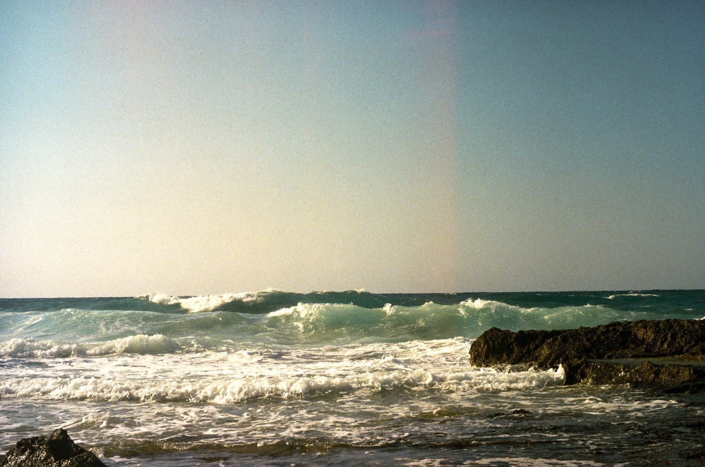
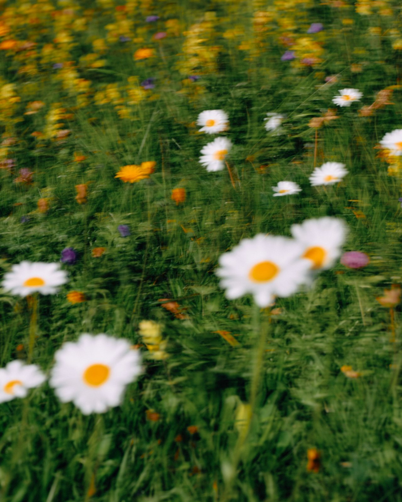
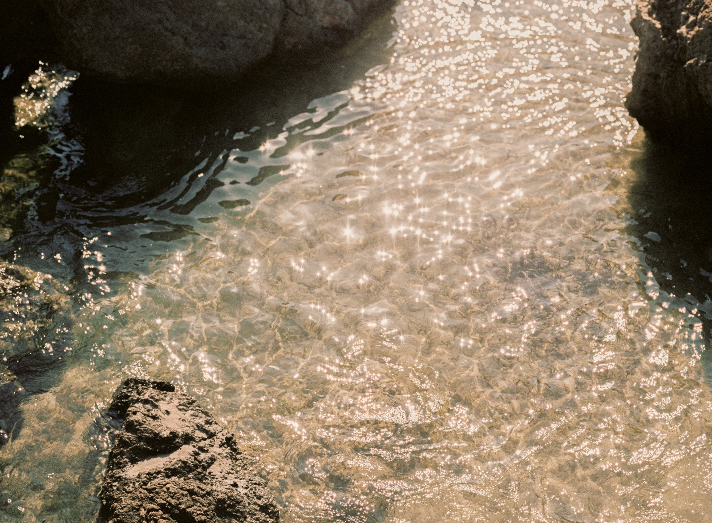
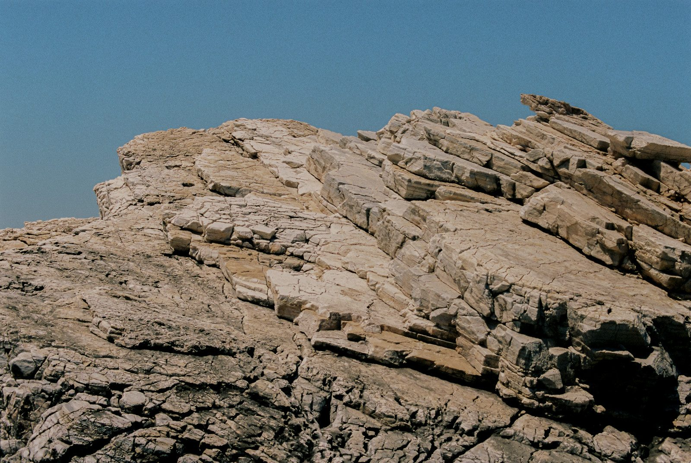
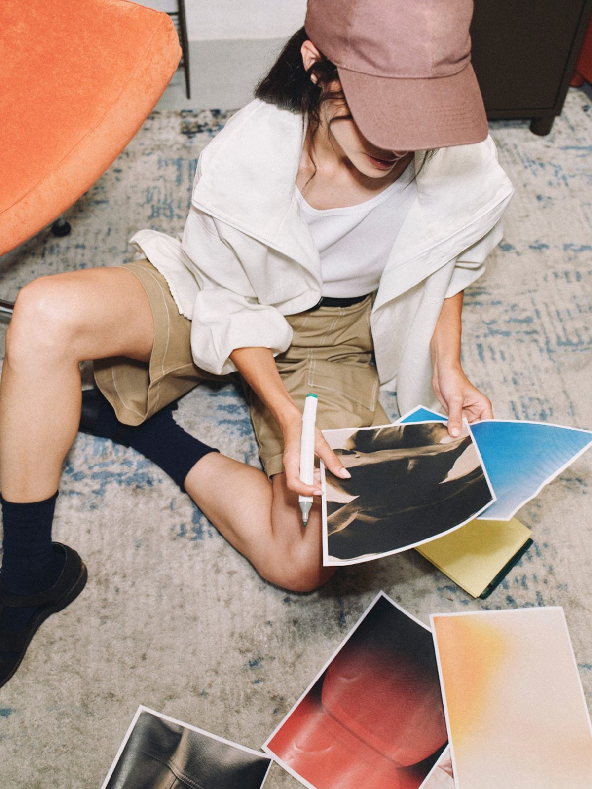

Data science · AI ethics · Making things
Sasha Tejada
Schaps
I’m Sasha. I work at the intersection of people, data, and the systems we build—asking how technology can leave us better off.
Explore selected work
01 / Selected work
Questions worth
spending time with.
A few explorations in climate, data, and the patterns hiding in plain sight.

01Climate & uncertaintyProject Raincheck
What can El Niño really tell us about California rainfall? A closer look at a loose promise.

02Ocean & observationLet’s Not Boil the Ocean
Exploring ocean conditions and fisheries through interactive climate data.
Bullish on Sharks
Exploratory analysis, data cleaning, and a different view of the ocean.

A little altitude. A little perspective.
02 / A little about me
Equal parts
analysis & instinct.
A part-time potter and full-time marketing enablement manager, studying data science and AI.
I’m committed to building and measuring systems that serve public interests. My work brings together program execution, a growing data science practice, and questions about how we make technology more useful and responsible.
- Currently studying
- UC Berkeley · MIDS
- Previously
- Meta × World Health Organization
- Thinking about
- AI ethics & program enablement
03 / Notes from the bookshelf
A little library.
Ideas to sit with, return to, and carry into the work. Pull a book from the shelf; a red ribbon marks a current read.
Away from the screen
Thinking with
my hands.
There’s another side to the practice: wheel-thrown stoneware, made in small batches in California.
Visit the pottery shop
04 / Keep the conversation going
Good work starts
with a conversation.
↗Data science, AI ethics, program enablement.
Or a book you think I should read.